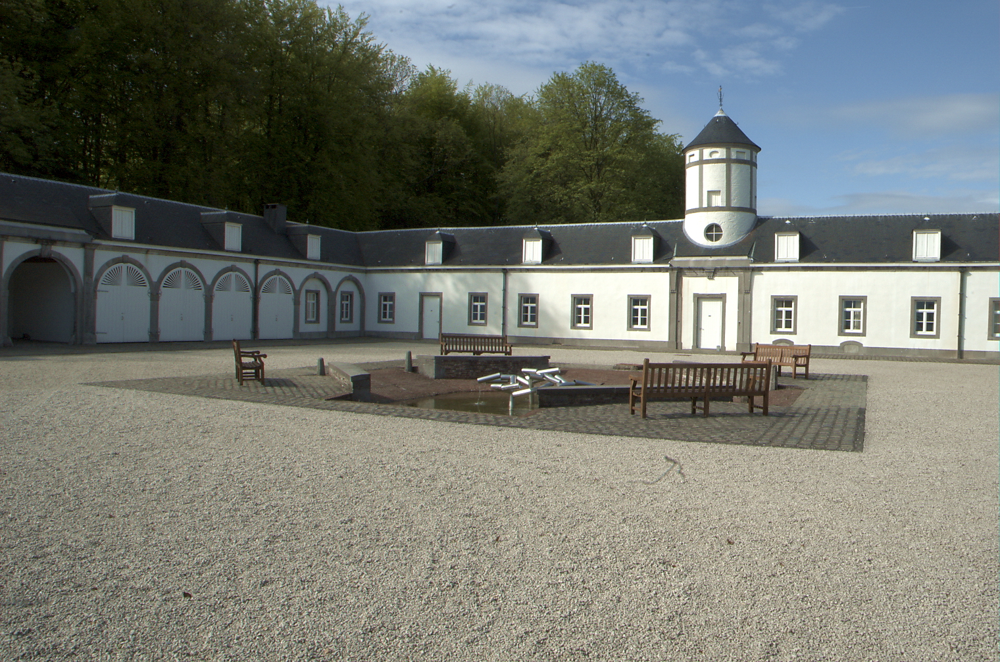

<!DOCTYPE html>
<html class='no-js' lang='en'>
<head>
<meta charset='utf-8'>
<title>Séminaires en présentiel &mdash; CETL – Centre Européen de Traduction Littéraire</title>
<meta content='Centre Européen de Traduction Littéraire. Avec le soutien de la Communauté française de Belgique, de la Commission communautaire française.' name='description'>
<meta content='traduction, traduction littéraire' name='keywords'>
<meta content='Françoise Wuilmart' name='author'>
<meta content='Séminaires en présentiel &amp;mdash; CETL – Centre Européen de Traduction Littéraire' name='DC.title'>
<meta content='width=device-width, initial-scale=1' name='viewport'>
<link href="../stylesheets/styles-79adecb8.css" rel="stylesheet" />
<link href='/humans.txt' rel='author'>
<link href='favicon.ico' rel='shortcut icon'>
<script>
  (function(i,s,o,g,r,a,m){i['GoogleAnalyticsObject']=r;i[r]=i[r]||function(){
  (i[r].q=i[r].q||[]).push(arguments)},i[r].l=1*new Date();a=s.createElement(o),
  m=s.getElementsByTagName(o)[0];a.async=1;a.src=g;m.parentNode.insertBefore(a,m)
  })(window,document,'script','//www.google-analytics.com/analytics.js','ga');
  ga('create', 'UA-2826331-7', 'auto');
  ga('require', 'displayfeatures');
  ga('send', 'pageview');
</script>

</head>
</html>

<body class='page'>
<!--[if lte IE 8]><p class='browser-upgrade'>You are using an
<strong>outdated</strong>
browser. Please
<a href="http://browsehappy.com/" rel="external" target="_blank">upgrade your browser</a>to improve your experience.</p><![endif]-->

<header class='banner navbar navbar-default navbar-static-top' role='banner'>
<div class='container'>
<div class='navbar-header'>
<button class='navbar-toggle' data-target='.navbar-collapse' data-toggle='collapse' type='button'>
<span class='sr-only'>Toggle navigation</span>
<span class='icon-bar'></span>
<span class='icon-bar'></span>
<span class='icon-bar'></span>
</button>
<a class='navbar-brand' href='/'>CETL</a>
</div>
<nav class='collapse navbar-collapse' role='navigation'>
<ul class='nav navbar-nav' id='menu-primary-navigation'>
<li class=''>
<a href="/le-cetl/direction/">Direction</a>
</li>
<li class='active'>
<a href="/seminaires-presentiel/">Séminaires en présentiel</a>
</li>
<li class=''>
<a href="/ateliers-visio/">Ateliers en visio-conférence</a>
</li>
<li class=''>
<a href="/articles/">Articles</a>
</li>
<li class=''>
<a href="/liens/">Liens</a>
</li>
<li class=''>
<a href="/contact/">Contact</a>
</li>
</ul>
</nav>
</div>
</header>

<div class='jumbo-background hidden-xs'>
<div class='container'>
<div class='row'>
<div class='col-12'>
<h1 class='jumbo-title'>Centre européen de traduction littéraire</h1>
</div>
</div>
</div>
</div>

<div class='wrap container' role='document'>
<div class='content row'>
<div class='col-sm-12 col-md-3 col-lg-3 hidden-xs sidebar sidebar-left'>
<ol class='menu' id='menu-submenu'>
<li class=''>
<a href="/le-cetl/manifeste-cetl/">Le manifeste du CETL</a>
</li>
<li class=''>
<a href="/le-cetl/fonctionnement-et-inscription/">Fonctionnement et inscription</a>
</li>
<li class=''>
<a href="/le-cetl/conditions-d-admission/">Conditions d’admission</a>
</li>
<li class=''>
<a href="/le-cetl/programmation-et-tarifs/">Programmation et tarifs</a>
</li>
<li class=''>
<a href="/le-cetl/examens/">Examens</a>
</li>
<li class=''>
<a href="/le-cetl/memoires-et-soutenance/">Mémoires et soutenances</a>
</li>
<li class=''>
<a href="/le-cetl/le-diplome/">Le diplôme</a>
</li>
<li class=''>
<a href="/le-cetl/liste-des-enseignants/">Liste des enseignants</a>
</li>
</ol>
</div>

<div class='main col-sm-12 col-md-6 col-lg-6'>
<h1>
Séminaires en présentiel
</h1>
<p></p>

<p>Le CETL organise régulièrement des ateliers, séminaires et stages ciblés sur la traduction littéraire et dirigés par des professionnels, praticiens et universitaires.</p>

<p>Lieu : Les sessions sont organisées au château de Seneffe, résidence comprenant une très confortable infrastructure hôtelière.</p>

<p>Dates : les dates sont variables et fixées exclusivement durant les vacances scolaires belges (vacances de Pâques, et mois de juillet)</p>

<p>Parmi ces séminaires : des <strong>stages de surtitrage</strong> dirigés par Michel Bataillon et Pierre Yves Diez, de la Maison Antoine Vitez (de préférence durant les vacances de Pâques)</p>

<h2>Séminaires et ateliers en 2020</h2>

<p>Ci-dessous : programmes, tarifs et synopsis.</p>

<h3>Programme</h3>

<h4>du 1 au 9 juillet 2020</h4>

<p><strong>Jean-Claude Lebrun : mercredi 1 et jeudi 2 juillet</strong></p>

<p>Arrivée possible : le mardi 30 juin, dans la soirée – (repas du soir prévu : à confirmer par le participant) ou le mercredi matin</p>

<p>Ateliers : mercredi 1 et jeudi 2 juillet (à partir de 10 h 30 le mercredi - horaire à préciser)</p>

<p>Départ : jeudi 2 juillet dans la soirée (participation au repas du soir : à confirmer par le participant)</p>

<p><strong>Michel Volkovitch : vendredi 3 et samedi 4 juillet</strong></p>

<p>Arrivée : vendredi 3 juillet au matin</p>

<p>Ateliers : vendredi 3 et samedi 4 juillet (à partir de 10 h 30 le vendredi - horaire à préciser)
Départ : samedi 4 juillet dans la soirée (participation au repas du soir : à confirmer par le participant)</p>

<p><strong>Olivier Mannoni : dimanche 5 et lundi 6 juillet</strong></p>

<p>Arrivée : dimanche 5 au matin</p>

<p>Ateliers : dimanche 5 et lundi 6 juillet (à partir de 10h30 le dimanche – horaire à préciser)
Départ : lundi 6 juillet dans la soirée (participation au repas du soir : à confirmer par le participant)</p>

<p><strong>Françoise Wuilmart : mardi 7 et mercredi 8 juillet</strong></p>

<p>Arrivée : Mardi 7 au matin</p>

<p>Ateliers : mardi 7 et mercredi 8 juillet (à partir de 10h30 le mardi – horaire à préciser)
Départ : mercredi 8 juillet dans la soirée (participation au repas du soir : à confirmer par le participant) ou jeudi 9 dans la matinée.</p>

<h3>Tarifs</h3>

<p><strong>310 euros</strong> par atelier, all inclusive (+ par repas supplémentaire non compris dans les deux jours : environ 15 euros.)
Acompte comme garantie de l’inscription : <strong>110 euros</strong></p>

<p><strong>A verser pour le 1 mai au plus tard sur le compte du CETL :</strong>
Fortis Bank – BNP Paribas, Agence Dilbeek (Verheydenstraat, 22 – 1700 Dilbeek, Belgique</p>

<p>001-3963195-45
<strong>IBAN : BE44001396319545</strong>
BIC : GEBABEBB</p>

<h3>Synopsis</h3>

<h3>1. Analyse textuelle</h3>

<h4>Jean-Claude Lebrun</h4>

<p>En ouverture de l’atelier, on proposera un rapide panorama des tendances qui structurent le paysage romanesque francophone (proses du « moi », biographies, roman d’idées, roman d’aventure, roman politico-historique…)
Les séances suivantes seront consacrées à l’analyse d’extraits de textes récents, après lecture préalable des participants. Le corpus complet sera précisé dans les prochaines semaines. Sont d’ores et déjà prévus : Jean Echenoz, Jean-Philippe Toussaint, Marie-Hélène Lafon.
L’atelier d’analyse textuelle fonctionnera en interaction avec les participants, qui auront effectué un travail préparatoire de réflexion.</p>

<h3>2. Stimulation à la créativité pour traducteurs</h3>

<h4>Michel Volkovitch</h4>

<p>Au programme, une série d’exercices variés, dans un esprit ludique, pour une approche de l’écriture moins cérébrale que sensorielle et avant tout musicale. On exercera nos oreilles en travaillant les rythmes et les sonorités. On abordera la grammaire, non plus comme à l’école, mais en y voyant une machine à produire de l’émotion. Au passage on découvrira — ou redécouvrira — des auteurs précieux pour tous ceux, traducteurs ou non, qui veulent apprendre à mieux lire et mieux écrire — les deux étant étroitement liés.<br>
Tour d’horizon pragmatique du métier</p>

<h4> Olivier Mannoni</h4>

<p>Dans quel cadre s&#39;exerce la profession de traduction littéraire? Qu&#39;est-ce qu&#39;un contrat de traduction? Comment se former, trouver des contacts dans le milieu de l&#39;édition, négocier, travailler dans de bonnes conditions humaines et dans le respect des œuvres et des lecteurs? Comment construire une &#39;carrière&#39; de traducteur – en un mot: comment devenir un traducteur heureux, s&#39;il en est?</p>

<h3>3. Passons à la pratique</h3>

<h4>Françoise Wuilmart</h4>

<p>Cette rencontre a pour but d’établir un véritable dialogue entre professionnels et apprenants, dans le but prioritaire de sortir ceux-ci de leur isolement forcé.</p>

<p>Les participants feront une liste individuelle des problèmes qui se posent à eux en traduction littéraire, de préférence en donnant des exemples concrets. On tentera d’y répondre de manière exhaustive, passant en revue les différentes réponses possibles inspirées par diverses écoles ou approches de la traduction. Les travaux de ces deux journées seront avant tout pratiques : un peu de théorie, beaucoup d’exemples et d’exercices.</p>

</div>

</div>
</div>
<footer class='container' role='contentinfo'>
<div class='row'>
<div class='col-lg-12'>
<p class='text-center'>
© 2025 CETL – Centre Européen de Traduction Littéraire
</p>
</div>
</div>
</footer>

<script src='https://cdn.jsdelivr.net/lodash/4.17.4/lodash.min.js'></script>
<script src="../javascripts/scripts-da39a3ee.js"></script>
</body>
